Co nowego
1.2.0 i gateway 0.3.1, październik 2026
Zaszyfrowane także w Twojej sieci domowej
Przez Tailscale połączenie było już szyfrowane. W sieci domowej aplikacja używa teraz HTTPS i sprawdza odcisk certyfikatu samej bramy, który przychodzi wraz z kodem QR do parowania.
Poprawki po przeglądzie bezpieczeństwa
Gateway 0.3.1 zamyka luki znalezione w naszym przeglądzie ISO 27001: odwoływalne urządzenia, domyślnie tylko Tailscale, dostęp do terminala przyznawany dla każdego urządzenia, dziennik odporny na manipulacje oraz pomocnik root, dzięki któremu brama może działać jako zwykły użytkownik.
Monity bezpieczeństwa
Powiadomienie o ryzyku przy pierwszym uruchomieniu, a polecenia, które usuwają, nadpisują, szyfrują, formatują lub wyłączają, pytają przed wykonaniem.
Aplikacje na pulpit
TrXi-Ctrl działa teraz w systemach Windows, macOS i Linux, a także na telefonach. Steruj swoim komputerem z Linuksem z laptopa: te same ekrany, z prawdziwą myszą i klawiaturą.
Zdalny pulpit z myszą i klawiaturą
Przesuwaj, klikaj (lewy, środkowy, prawy), przeciągaj i przewijaj zdalny ekran myszą; pisz i używaj skrótów, takich jak Ctrl+C, na własnej klawiaturze. Sterowanie dotykowe na telefonach pozostaje bez zmian.
Dźwięk razem z obrazem
Zdalny pulpit odtwarza dźwięk komputera razem z ekranem, z przyciskiem wyciszenia na karcie Pulpit.
Parowanie z obrazu lub kodu
Nie ma cię przy komputerze? Ktoś na miejscu może wysłać ci e-mailem kod QR parowania — otwórz obraz w skanerze aplikacji (ikona obrazu). Komputery bez kamery wpisują kod parowania.
Urządzenia i biała lista
Strona administracyjna bramy wyświetla każde urządzenie, które się połączyło, i informację, czy jest online, oraz pozwala wpuścić tylko zaznaczone urządzenia — według nazwy Tailscale lub, w sieci domowej, adresu MAC.
Menedżer bramy
Mały panel na pulpicie do uruchamiania, zatrzymywania i ponownego uruchamiania usługi bramy, wyświetlania, zapisywania lub kopiowania kodu QR parowania oraz odczytu dziennika bramy.
Co robi
Jedna aplikacja na telefonie, jeden demon bramy na pulpicie
System i warstwy
Statystyki CPU/pamięci/temperatury na żywo i przełączanie warstw AUFS, prosto z pulpitu.
Sieć i Wi-Fi
Interfejsy, adresy, skanowanie i łączenie Wi-Fi — w tym wykrywanie peerów Tailscale do automatycznego znajdowania bramy.
Bluetooth
Zasilanie, wykrywalność/parowanie, skanowanie, parowanie, łączenie, zaufanie, usuwanie — pełna kontrola nad adapterem.
Zapora
Przeglądaj i edytuj reguły oraz łańcuchy iptables, stosuj presety, z telefonu.
Dźwięk
Głośność, wyciszenie, lista sink — i przesyłanie strumieniowe wyjścia audio pulpitu na głośnik telefonu przez WebRTC.
Głoska bezdźwięczna
Prawdziwe play/pause/seek/volume dla Chameleon Media Center oraz odtwarzaczy opartych na MPV, przez własny gniazdo IPC mpv — nie tylko statyczna lista plików.
CMK na żywo
Oglądaj Chameleon Media Centertransmisję na żywo na telefonie — wybierz Low latency (MPEG-TS) lub Smooth (HLS) dla słabszych połączeń — sprawdź, czy jest na żywo, jego źródło i ile osób ogląda, i skopiuj link, aby każdy mógł oglądać w przeglądarce.
Windows i pulpity
Wyświetlanie listy, fokus, zamykanie, minimalizowanie, maksymalizowanie, kafelkowanie okien i przełączanie pulpitów wirtualnych.
Pulpit zdalny
Pełne udostępnianie ekranu przez WebRTC, z dźwiękiem komputera — oglądaj i kontroluj swój pulpit z dowolnego miejsca w sieci. W telefonie dotyk steruje myszą, a pasek na ekranie wysyła tekst; w aplikacjach Windows, macOS i Linux własna mysz i klawiatura działają bezpośrednio. Kliknięcia i naciśnięcia klawiszy pojawiają się na pulpicie niemal natychmiast; wszelkie zauważalne opóźnienia dotyczą aktualizacji ekranu wracających do ciebie, a nie twojego wprowadzania.
Wspólny schowek
Komputer jest centrum: każde urządzenie wysyła tam swój schowek — prosto do schowka komputera, gotowy do wklejenia — a ekran Schowka pokazuje wspólną historię ostatnich 50 elementów. Wysyłaj element do wybranych urządzeń lub grup, wyciszaj urządzenia, od których nie chcesz otrzymywać danych, i dotknij elementu, aby skopiować go na to urządzenie. W tle nic nie jest odczytywane ani zapisywane w schowku telefonu — tylko gdy dotkniesz.
Terminal
Prawdziwa powłoka, uruchamiana z telefonu.
Czat AI
Rozmawiaj z dowolnym dostawcą AI skonfigurowanym na bramie — DeepSeek, OpenAI, Anthropic i innymi.
Telefony z rootem
Dwa dodatkowe ekrany pojawiają się automatycznie, gdy telefon ma root (Magisk)
VPN hotspot
Udostępnij węzeł wyjściowy Tailscale telefonu każdemu urządzeniu w jego hotspotcie Wi-Fi — laptopy, telewizory i konsole otrzymują VPN bez instalowania czegokolwiek. Routing stosuje się ponownie automatycznie, jeśli hotspot lub Tailscale zostanie zrestartowany, a skrypt rozruchowy może przywrócić wszystko po ponownym uruchomieniu. Stworzone dla telefonu pozostawionego podłączonego jako router: limit ładowania, wyłączenie Tailscale z optymalizacji baterii i Always-on VPN.
Pamięć masowa USB
Podłącz telefon do dowolnego komputera, a pojawi się jako dysk USB. Utwórz obraz dysku o pojemności do 256 GB w kilka sekund — FAT32 (odczyta go każdy system), ext4 (bez limitu pliku 4 GB) lub dysk GPT z możliwością rozruchu z partycją EFI, aby laptop mógł uruchomić się z telefonu — następnie udostępnij go do odczytu i zapisu lub tylko do odczytu, albo otwórz go na samym telefonie. Możesz także przekazać komputerowi kartę SD telefonu lub dysk USB. ADB pozostaje połączone podczas udostępniania.
Brama
trixie-gateway — strona desktopowa, pojedynczy samodzielny plik binarny
Jeden plik binarny, Python niepotrzebny
Pobierz jeden samodzielny plik wykonywalny — bez Pythona, pip ani venv na maszynie. Od wersji v0.3.0 odpowiada tylko przez Tailscale (lub HTTPS w Twojej sieci domowej, jeśli to włączysz) i z samego komputera, nowe urządzenia zaczynają bez dostępu do terminala, a utracone urządzenia można odwołać ze strony administratora. Zbudowane na aiohttp + aiortc, a źródło wciąż jest na GitHubie, jeśli wolisz uruchamiać z Pythona. Działa samodzielnie lub jako usługa systemd, nasłuchując na Twoim adresie Tailscale/LAN.
~110 punktów końcowych REST
Wszystkie funkcje aplikacji telefonu powyżej, plus zgodny z OpenAI /v1/chat/completions który kieruje do dowolnego skonfigurowanego przez ciebie dostawcy AI.
Serwer MCP w zestawie
media_mcp_server.py udostępnia kontrolę multimediów (status, odtwarzanie, pauza, przewijanie, głośność, otwieranie, przeglądanie) jako narzędzia MCP przez stdio JSON-RPC — te same dane sesji i ścieżka kontroli, których używa aplikacja telefonu, więc agent AI i twój telefon zawsze widzą to samo.
Zgodność
Stworzone dla Debian Trixie — szczerze o tym, gdzie jeszcze działa
| Platforma | Status | Dlaczego |
|---|---|---|
| Debiana Trixie | ✓ Opracowane i przetestowane tutaj | — |
| Rodzina Fatdog64 / Puppy Linux | ✓ Powinno działać | Funkcja Layers automatycznie wykrywa gałęzie union-fs pod albo /aufs (pochodna Fatdog64, w tym ta maszyna) lub /initrd (standardowy Puppy) — /initrd ścieżka nie została przetestowana na prawdziwej instalacji Puppy, opiera się na udokumentowanych konwencjach, a nie na weryfikacji praktycznej |
| Inne pulpity X11 Linux | ✓ Powinno działać | Wymaga BlueZ, iptables, PulseAudio/PipeWire ze zgodnością pactl oraz sesji X11. Wayland jest eksperymentalny: kompozytory z ext-image-copy-capture i protokołami foreign-toplevel (testowane na mango); sesje Wayland GNOME i KDE nie są jeszcze obsługiwane |
| Windows 11 | 🧪 Eksperymentalna kompilacja testowa | Udostępnianie ekranu, mysz/klawiatura, lista okien, głośność i terminal są zaimplementowane dla Windows. Plik binarny kompiluje się i uruchamia w zautomatyzowanym CI, ale nie został jeszcze uruchomiony na prawdziwej maszynie z Windows — spodziewaj się niedociągnięć. Bluetooth, zapora, warstwy, jasność, sieć i Media Center pozostają tylko dla Linuksa i odpowiadają 501 |
| macOS (Intel i Apple Silicon) | 🧪 Eksperymentalna kompilacja testowa | Ten sam zestaw funkcji co w Windows, wykorzystujący Quartz, AVFoundation i osascript. Kompiluje się i uruchamia w CI dla obu architektur, ale jest nietestowany na prawdziwych Macach. Aplikacja jest niepodpisana, a macOS poprosi o uprawnienia do nagrywania ekranu i dostępności |
Zrzuty ekranu
TrXi-Ctrl — przechwycone na żywo, działające na prawdziwym sprzęcie
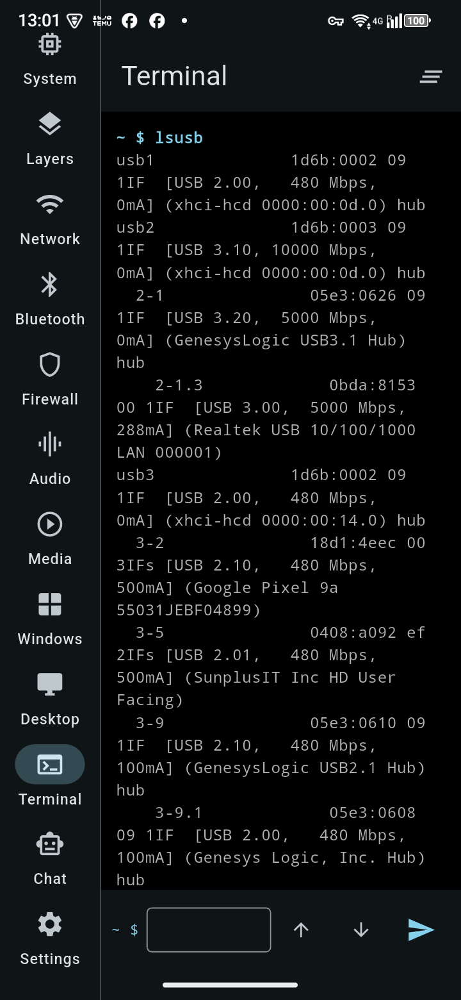
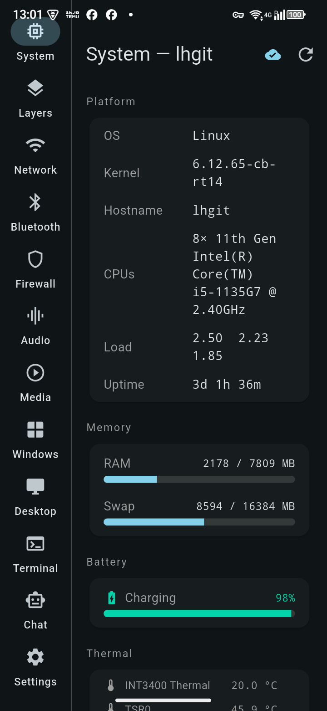
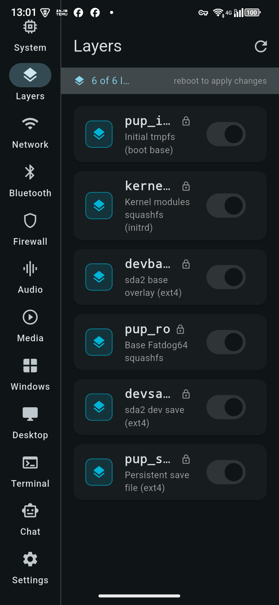
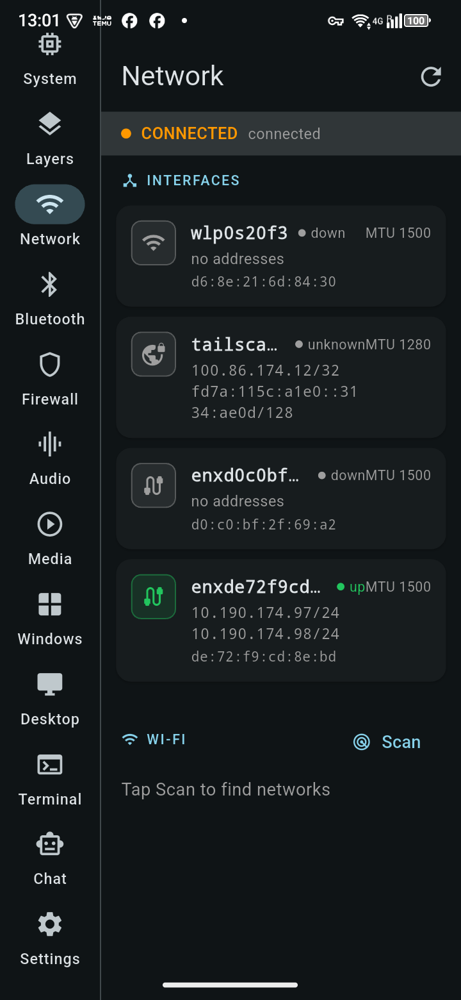
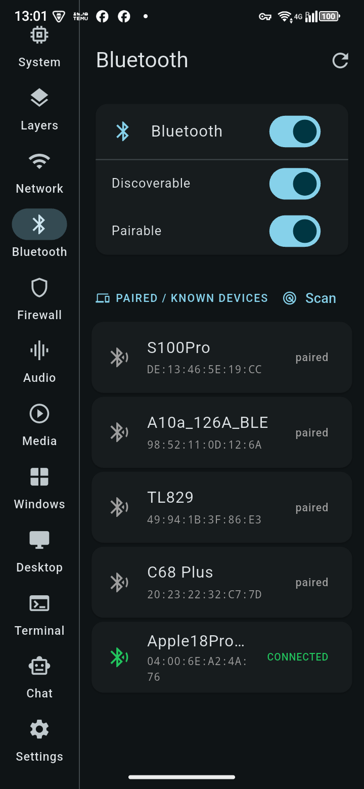
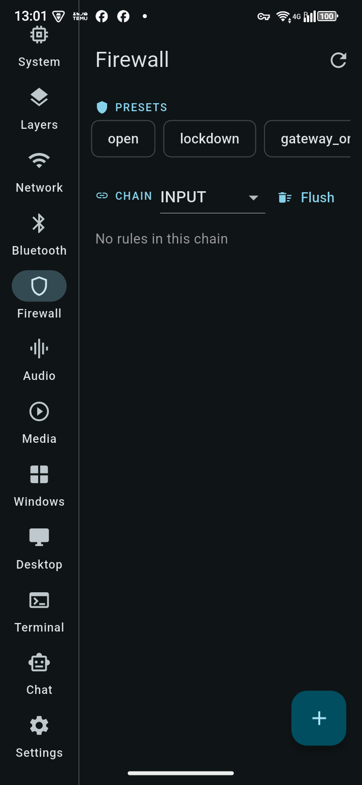
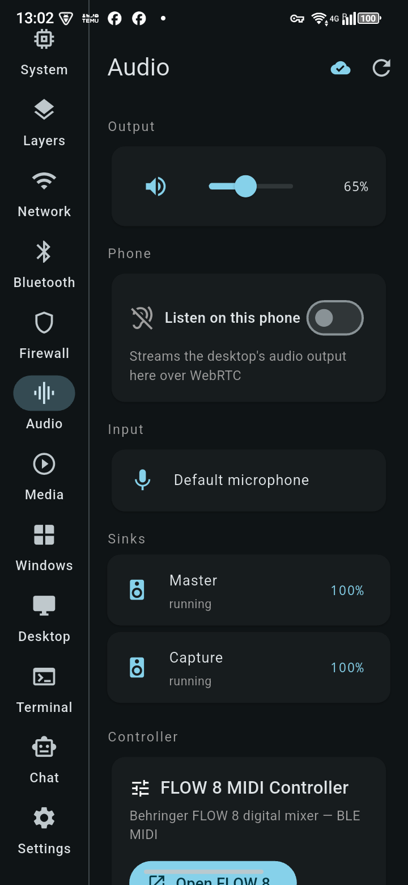
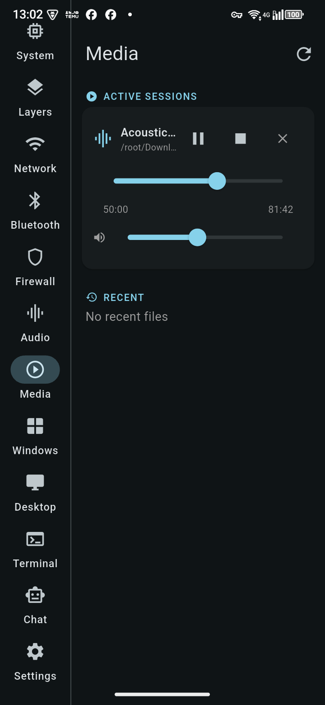
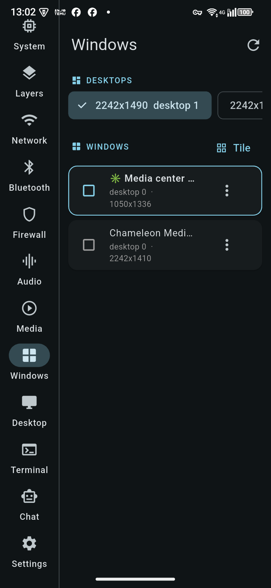
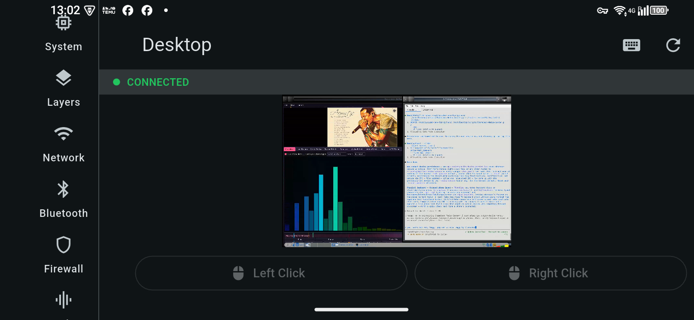
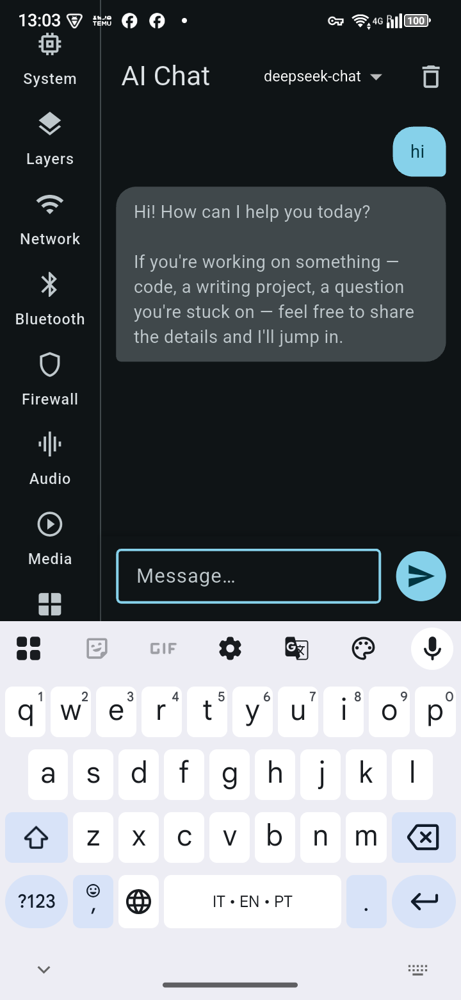
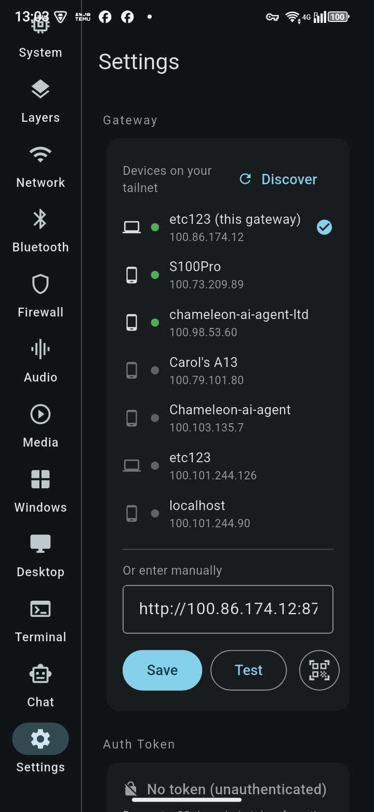
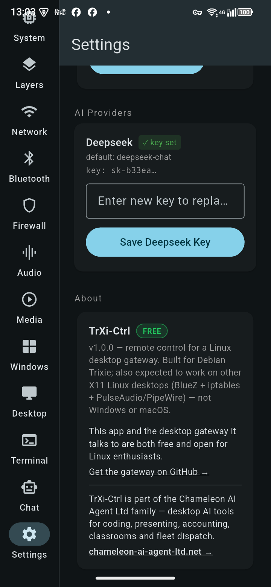
Pobierz TrXi-Ctrl 1.2.0 ZA DARMO
Aplikacja na telefon lub komputer oraz brama dla pulpitu Linux, którym chcesz sterować.
⬇ Android (APK) ⬇ Okna ⬇ macOS (.dmg) ⬇ Linux ⬇ iOS (niepodpisane, sideload) ⬇ Bramka dla LinuxWymaga gateway v0.3.1 lub nowszego. Starsze telefony (32-bitowy Android): pakiet armv7 · Wszystkie pliki: strona wydania · Gateway na GitHubie →
⚠️ Używaj na własne ryzyko. TrXi-Ctrl i trixie-gateway to wolne oprogramowanie, które daje sparowanemu urządzeniu potężną kontrolę nad Twoim komputerem, w tym uruchamianie poleceń jako użytkownik bramy (często root). Odpowiadasz za każde wysłane polecenie, za utrzymywanie bramy poza otwartym internetem i prywatność kodów parowania oraz za kontrolowanie wyłącznie maszyn, do których masz uprawnienia. CHAMELEON-AI-AGENT LTD i autor nie ponoszą żadnej odpowiedzialności za szkody wynikające z destrukcyjnych poleceń, udostępniania zasobów przez internet lub nieobsługiwanych konfiguracji — zobacz Warunki §8A. Co naprawiliśmy i planujemy naprawić, w odniesieniu do ISO/IEC 27001: przegląd bezpieczeństwa (praca nad zgodnością, nie certyfikacja).
Zainstaluj aplikację
Żadna z kompilacji nie jest jeszcze podpisana przez Apple ani Microsoft, więc każdy system raz zapyta, czy jej ufasz
Android
Pobierz APK na telefon i otwórz go. Android przy pierwszym razie poprosi o zezwolenie na instalacje z przeglądarki lub menedżera plików — zezwól, a następnie kliknij Zainstaluj. Większość telefonów z ostatnich dziesięciu lat potrzebuje APK arm64; używaj armv7 tylko na starych telefonach 32-bit. Późniejsze aktualizacje mogą przychodzić bezpośrednio z gateway: Aktualizacje karta.
iPhone i iPad
Kompilacja iOS jest niepodpisana, więc jest instalowana przez sideload: zainstaluj Ładowanie boczne lub AltStore na komputerze podłącz iPhone'a, przeciągnij .ipa i zaloguj się dowolnym Apple ID. Następnie na iPhonie: Ustawienia → Ogólne → VPN i zarządzanie urządzeniem → zaufaj swojemu Apple ID. W przypadku darmowego Apple ID aplikację trzeba ponownie zainstalować co 7 dni.
Windows 10/11
Rozpakuj pobrany plik w dowolnym miejscu (na przykład C:\Programs\TrXi-Ctrl) i uruchom trxi_ctrl.exe. SmartScreen za pierwszym razem powie „Windows chroni Twój komputer”: Więcej informacji → Uruchom mimo to. Trzymaj pliki razem — .exe potrzebuje bibliotek DLL i folderu data obok niego.
macOS
Otwórz .dmg i przeciągnij TrXi-Ctrl do Aplikacje. Za pierwszym razem kliknij aplikację prawym przyciskiem → Otwarte → Otwórz (dwukrotne kliknięcie jest zablokowane, ponieważ nie jest notaryzowana). Jeśli macOS nadal odmawia, Ustawienia systemowe → Prywatność i bezpieczeństwo → Otwórz mimo to.
Linuksa
Wymaga GTK 3 i libmpv: w Debian/Ubuntu sudo apt install libgtk-3-0 libmpv2. Następnie tar -xzf TrXi-Ctrl-1.2.0-linux.tar.gz i uruchom ./bundle/trxi_ctrl. Trzymaj bundle folder razem.
Sparuj ze swoim komputerem
Na pulpicie Linux z uruchomioną bramą otwórz http://localhost:8772/admin (lub Gateway Manager). Telefony i Mac: aplikacja → Ustawienia → ikona skanera QR → zeskanuj kod QR lub dotknij ikony obrazu, aby otworzyć obraz kodu QR wysłany ci e-mailem. Windows i Linux: wprowadź adres bramy i kod parowania wyświetlany pod kodem QR. Kod działa jednorazowo i jest ważny 10 minut. Oba urządzenia muszą być w tej samej sieci Tailscale (dostęp do sieci domowej jest wyłączony, chyba że go włączysz). Nowe urządzenia nie mogą korzystać z Terminala, dopóki nie zaznaczysz Terminal ich na stronie administratora.
Zainstaluj bramkę
Na maszynie z Debian Trixie (lub kompatybilnym Linuxem), którą chcesz kontrolować
Wolisz Python? git clone https://github.com/cou645/trixie-gateway.git, następnie pip install -r requirements.txt I python3 gateway.py --port 8772. Pełna dokumentacja instalacji, w tym uruchamianie jako własny użytkownik (zalecane) lub jako usługa systemowa, znajduje się w repozytorium README.md.
🔏 Sprawdź swoje pobranie. Każde wydanie ma SHA256SUMS.txt podpisany naszym kluczem wydania, wydanie trxi.pub. Mając trzy pliki obok pobranego pliku: openssl pkeyutl -verify -pubin -inkey trxi-release.pub -rawin -in SHA256SUMS.txt -sigfile SHA256SUMS.txt.sig musi wyświetlać "Signature Verified Successfully", następnie sha256sum -c --ignore-missing SHA256SUMS.txt musi wyświetlać OK.
🧪 Testowe kompilacje dla Windows i macOS są na strona wydań (trixie-gateway-windows-x86_64.exe, trixie-gateway-macos-arm64.zip, trixie-gateway-macos-x86_64.zip). Nie są podpisane, więc Windows SmartScreen powie "nieznany wydawca" (Więcej informacji → Uruchom mimo to), a macOS zablokuje pierwsze uruchomienie (kliknij prawym przyciskiem → Otwórz). Zgłoś, co nie działa.
Lubisz TrXi-Ctrl? Zobacz, co jeszcze tworzymy
TrXi-Ctrl to darmowa część większej rodziny narzędzi AI na komputery — edytora kodu, studia prezentacji, brytyjskiej księgowości, dyspozytorni flot i innych.
Zobacz wszystkie aplikacje Chameleon AI → Chameleon Companion (AI na telefon i komputer) →